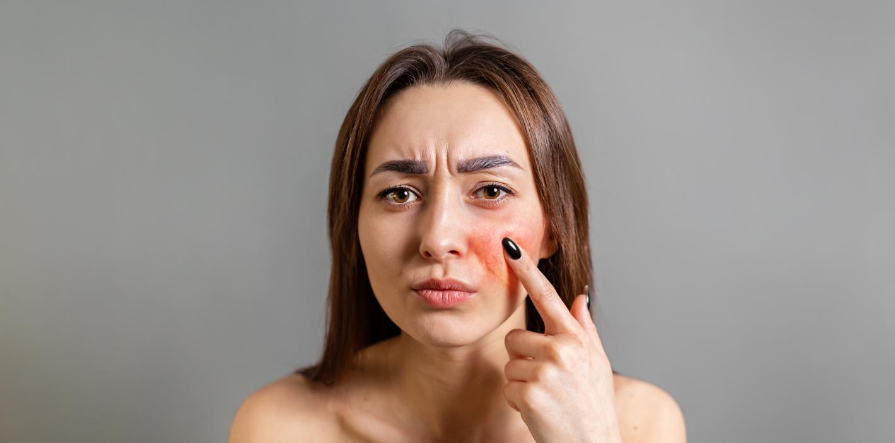
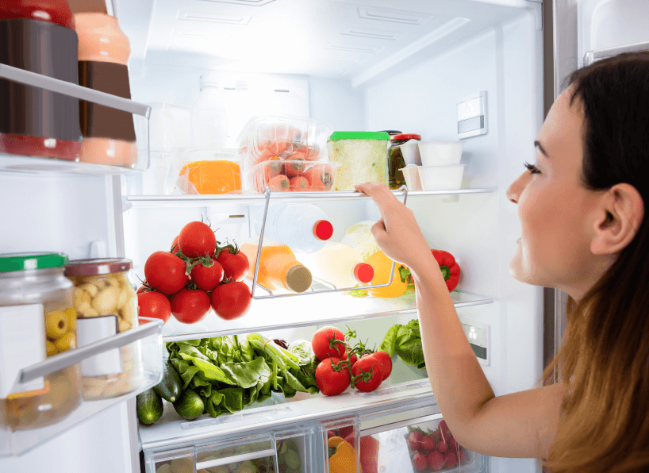
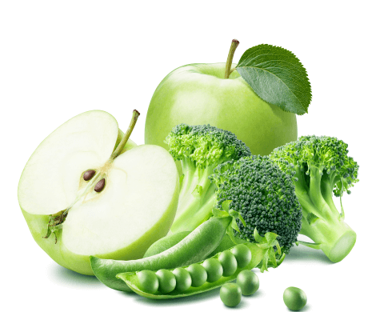

Рекомендации по питанию для пациентов с розацеа

02.02.2023

1 119

5 мин

Содержание
Розацеа – хроническое воспалительное заболевание, которое характеризуется покраснением участков кожи лица и шеи. Это заболевание, как правило, протекает периодами чередования обострений и ремиссий.
В настоящий момент розацеа рассматривают как заболевание, появление которого может быть связано как с внешними факторами, так и с внутренними индивидуальными процессами человеческого организма. Среди внешних факторов важное место занимают ультрафиолетовое излучение, перепады температур и раздражающее влияние средств по уходу за кожей. Среди часто встречающихся триггеров можно выделить употребление горячей пищи, специй, кофе, а также алкоголя.
В этой статье пойдет речь о питании. Вы узнаете, какие продукты не рекомендуется употреблять пациентам с розацеа, а также получите общие рекомендации о том, что можно есть и пить, чтобы не спровоцировать обострение.
Розацеа – сложное заболевание, и причины его появления, как и лечение, нельзя связывать только лишь с потреблением определенных продуктов. Терапия включает комплексный подход, куда входят и правильный уход за кожей, и применение противовоспалительных препаратов, и диета1.
Алкоголь при розацея
Вино и крепкие напитки могут спровоцировать обострение симптомов розацеа. Алкоголь является сосудорасширяющим средством, а это приводит к покраснению кожи.
Однозначно следует убрать алкоголь при обострении заболевания. В период ремиссии допустимо употребление умеренных доз, однако следует помнить, что алкоголь – один из факторов, который способен спровоцировать заболевание и в совокупности с индивидуальными особенностями организма может сработать как триггер. Поэтому наблюдайте за реакцией своей кожи на раздражитель. Если после употребления даже небольших доз спиртного ваша кожа чувствует дискомфорт, лучше совсем отказаться от горячительных напитков.
Что нельзя есть при розацея

В терапии и профилактике розацеа важную роль играет устранение сопутствующих патологий эндокринной системы и желудочно-кишечного тракта2. В таких случаях диету назначает врач.
А если речь идет о профилактических мерах, следует придерживаться сбалансированного питания и потреблять здоровые продукты, которые питают кожу. Это полезный выбор в целом независимо от того, есть у вас розацеа или нет.
Людям, кожа которых склонна к розацеа, не рекомендуется употреблять продукты и напитки, которые могут провоцировать обострение. Например, в опросе, проведенном американским Национальным обществом розацеа среди более чем 400 пациентов, 78 % отметили, что изменили свой рацион из-за болезни. Из этой группы 95% сообщили о последующем сокращении вспышек3 . Все эти люди потребляли острый соус, вино и помидоры, а затем отказались от этих продуктов.
С чем еще надо быть осторожнее:
● Продукты с высоким содержанием гистамина. Например, дрожжи, сыр, вяленое мясо, копченая рыба, квашеная капуста и
другие продукты брожения4. Гистамин высвобождается как
часть ответа иммунной системы на аллергическую реакцию.
Поэтому продукты с содержанием этого вещества могут
спровоцировать аллергию и покраснение кожи;
● Горячее. При розацеа запрещены горячие напитки и супы,
температура которых около 60о. Температура служит
основным триггерным фактором. Появление эритемы часто
наблюдается именно после употребления горячего.
Питание при розацея

Противовоспалительные продукты
В рацион рекомендуется включать продукты, богатые антиоксидантами: авокадо, брокколи, брюссельскую и цветную капусту, огурцы, оливковое масло, рыбу с высоким содержанием омега-3, зеленый чай, шпинат, тыкву, миндаль.
Продукты для пользы микрофлоры кишечника
Потребляйте продукты с высоким содержанием клетчатки (фасоль, нут, яблоки, зеленый горошек, чечевицу, малину) и пребиотические продукты (спаржу, семена льна, лук-порей, водоросли, цельнозерновые культуры).
С осторожностью относитесь к таким продуктам, как кефир и йогурт. Хоть и существуют исследования, которые доказывают, что свойства этих продуктов имеют благоприятное воздействие на микрофлору кишечника5, есть потенциальный риск развития эритемы.
Какие напитки можно пить при розацеа
Прежде всего, для нормального функционирования обмена веществ и работы ЖКТ необходимо поддерживать оптимальный водный баланс, для этого нужно соблюдать питьевой режим и пить достаточное количество воды. Норма потребления рассчитывается исходя из веса. Ориентировочно при весе 70–80 кг нужно от 2,8 до 3,2 литра.
Если вы любите чай, лучше отдать предпочтение зеленому. В качестве альтернативы подойдут ромашка аптечная или травяные сборы. Положительное действие на кожу лица оказывают ягодные компоты. Они обладают антиоксидантными свойствами, замедляют процессы старения и укрепляют иммунную систему.
Розацеа и морская вода
Лето - сложный период для больных розацеа, потому что солнечные лучи провоцируют обострение, а отдыхать у моря хотят все, независимо от состояния кожи.
Поэтому первое, о чем нужно помнить по приезде на курорт, – это то, что при розацеа загар противопоказан. А второе – обязательное использование солнцезащитных кремов.
Морская вода соленая, поэтому оказывает негативное воздействие на кожу. Она ее высушивает и способствует воспалениям. Поэтому важно принимать душ и умываться после купания в море. Когда вы находитесь на пляже, выбирайте затененные места, всегда держите в сумочке солнцезащитные кремы, чаще умывайтесь и не забывайте про ежедневный уход за кожей.
Литература:
- De Pessemier B, Grine L, Debaere M, Maes A, Paetzold B, Callewaert C. Gut-Skin Axis: Current Knowledge of the Interrelationship between Microbial Dysbiosis and Skin Conditions. Microorganisms. 2021.
- Российское общество дерматовенерологов и косметологов. Клинические рекомендации. Розацеа. 2020.
- Дрейк Л. Острый соус, вино и помидоры вызывают обострения, по данным опроса Rosacea.org. https://www.rosacea.org/rr/2005/fall/article_3.php.
- Swiss Interest Group Histamine Intolerance (SIGHI). Список совместимости продуктов гистамин. 2016.
- Chang YS, Trivedi MK, Jha A, Lin YF, Dimaano L, García-Romero MT. Synbiotics for Prevention and Treatment of Atopic Dermatitis: A Meta-analysis of Randomized Clinical Trials. JAMA Pediatr. 2016.